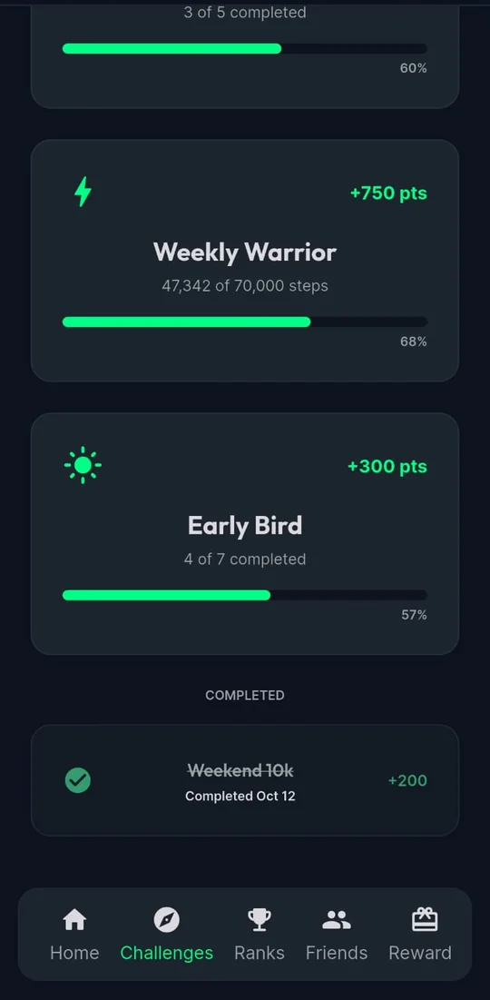
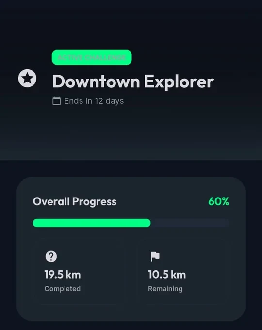
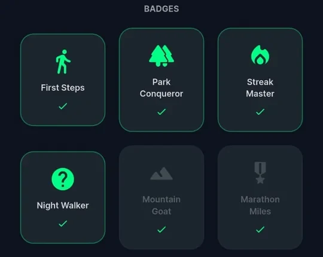

مشوار المليون خطوةبيبدأ بخطوة.
A million-step journey starts with one step.
الأسبوع ده، مصر مشيت
مصرخطوات الأسبوع
الكنبةلسه مستنية جول
18,426 مصري ومصرية مشيوا حوالي 314 مشوار من القاهرة للأقصر من السبت لحد دلوقتي. كل مليون خطوة ≈ المشوار ده، على أساس إن متوسط الخطوة حوالي 65 سم.
أرقام توضيحية في نسخة التصميم دي، وهتتربط بأرقام التطبيق الحقيقية.
جدول المحافظات
| # | المحافظة | الخطوات |
|---|
ماتشات الأسبوع
فريق الأسبوع
شلّة كورنيش المعادي
1,284,300خطوة
14لاعب
فريق توضيحي في نسخة التصميم دي. اسم فريقك ممكن يبقى هنا الأسبوع الجاي.
تقرير الماتش: إزاي بتلعب نمشي
ست لحظات من التطبيق، دقيقة بدقيقة، من شاشاته الحقيقية.الشاشات من نسخة تجريبية من التطبيق بالإنجليزي، والأسامي اللي عليها توضيحية.
-
1'

البداية: أول خطوة
ادخل بكود بيوصلك. خطواتك العادية بتتسحب لوحدها من Health Connect أو Apple Health، ولما تنزل تمشي مخصوص دوس «ابدأ العدّ».
-
15'

التحديات
هدف وميعاد: 70,000 خطوة في أسبوع، أو مسافة معيّنة في شهر. خلّصها واكسب نقط وشارات.
التحديات بتتحسب من المشاوير اللي بتسجّلها في التطبيق.
-
30'
صحابك
ضيف صحابك بالكود الشخصي بتاعهم، من غير بحث ولا أرقام تليفونات، وشوف مين سابقك.
بيشوفوا خطواتك، عمرهم ما بيشوفوا طريقك.
-
45'

فريقك
اعمل فريق لفصلك أو قسمك أو شلّتك وابعت الكود. المشاوير المسجّلة بتتحسب للفريق.
-
70'

كل كيلو بيفرق
كل تحدّي بيوريك إنت فين، وفاضل قد إيه، وبيخلص إمتى.
-
90'

صفّارة النهاية: الترتيب والشارات
مسابقات بين الأفراد والصحاب والفرق، وترتيب بيتحدّث طول المسابقة. وكل إنجاز ليه شارة.
ملخص الأسبوع
24 ثانية موشن جرافيك: ربط الكوتشي، أول خطوة، وبعدها مشي بيتحوّل لجري في القاهرة والنيل وإسكندرية والأهرامات والأقصر وأسوان وسينا، لحد ما العدّاد يوصل المليون.
اللعب النظيف
صحابك بيشوفوا خطواتك، مش طريقك. الموقع بيشتغل بس وإنت بتسجّل مشوار بدأته بنفسك. النت فصل؟ المشوار بيتحفظ على موبايلك وبيتبعت أول ما يرجع. وكل مشوار بيتراجع قبل ما يتحسب في المسابقات، واللي محتاج نظرة تانية بيراجعه بني آدم مننا.
بريد القرّاء
أكتر أسئلة بتوصلنا، وردّنا عليها.
التطبيق على أندرويد وآيفون؟— من قارئ في المنصورة
نمشي: أيوه، نمشي موجود على Google Play وعلى App Store، ومجاناً.
خطواتي العادية طول اليوم بتتحسب؟— من قارئة في الجيزة
نمشي: أيوه، في إحصائياتك اليومية وهدف الـ 10,000 خطوة. أما التحديات والمسابقات فبتتحسب من المشاوير اللي بتسجّلها في التطبيق.
أعمل فريق لشغلي أو مدرستي إزاي؟— من مدرّس في أسيوط
نمشي: اعمل فريق من التطبيق وهتاخد كود. أي حد يكتب الكود بينضم. ولو المكان كبير، اعمل فريق لكل فصل أو قسم.
صحابي هيعرفوا أنا ساكنة فين؟— من قارئة في إسكندرية
نمشي: لأ. صحابك بيشوفوا خطواتك ومجموعك بس. طريقك ونقطة البداية والنهاية عمرها ما بتظهر لهم.
لو النت فصل وأنا ماشي؟— من قارئ في أسوان
نمشي: كمّل مشي عادي. التطبيق بيسجّل من غير نت وبيبعت كل حاجة أول ما ترجع أونلاين.
العدد الجاي، إنت على الغلاف.
نزّل نمشي وخد أول خطوة. والـ 999,999 الباقيين هنعدّهم سوا.